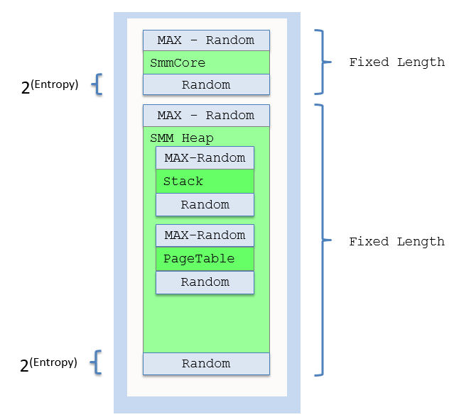

Enable Enable Address Sace Layout Randomization (ASLR) for System Mamangement Mode (SMM) in EDK II
System Management Mode (SMM) is a resource constrained environment.
- SmmCore randomization.
The SmmCore is loaded by SmmIpl, and SmmIpl need find all SMRAM and allocate the top of SMRAM for SmmCore. ExecuteSmmCoreFromSmram() (https://github.com/jyao1/SecurityEx/blob/master/AslrPkg/Override/MdeModulePkg/Core/PiSmmCore/PiSmmIpl.c) allocates the SMRAM for SmmCore, plus the maximum pages needed by randomization. Then it shifts the SmmCore inside of the whole allocated memory. This is designed to meet the requirement 1 – to make sure the SMRAM consumption is consistent.
- SMM heap randomization.
The SMM heap randomization is handled in https://github.com/jyao1/SecurityEx/blob/master/AslrPkg/Override/MdeModulePkg/Core/PiSmmCore/Page.c. When a new SMRAM block is found, the
SmmAddMemoryRegion()function reserves the some fixed length pages and shift the valid SMRAM inside of whole SMRAM. The same design philosophy can be adopted by any randomization in SMM, such as stack, page table, GDT, IDT, etc. The key is to allocate MAX fixed length pages, and shift content inside of it, in order to ensure that the SMRAM consumption is consistent in every boot.
Figure 3-7 shows the SMM memory layout.

Figure 3-7 SMM memory layout
SMM image randomization. SMM image randomization is similar to UEFI image randomization. When
PcdImageShuffleEnableis TRUE, theSmmCoredispatcher functionSmmDriverDispatchHandler()(https://github.com/jyao1/SecurityEx/blob/master/AslrPkg/Override/MdeModulePkg/Core/PiSmmCore/Dispatcher.c) callsSmmCoreLoadImages()to load all images with shuffled order before the dependency section is evaluated as we discussed above. Just as for UEFI, the SMM image shuffle only controls image load. It does not control image start. The image start process is unchanged.SmmCoreonly starts an image after its dependency is satisfied.SMM information leak prevention. SMM is considered as an isolated and secure execution environment. We randomize the component in SMM to prevent attacks. However, if the randomized information is exposed, it is considered as an information leak. In the current EDK II, the SmmCore installs an
EFI_LOADED_IMAGE_PROTOCOLinto DXE protocol database for each SMM images. ThisEFI_LOADED_IMAGE_PROTOCOLcontains the SMM image base and size information. This is a typical SMM information leak and make SMM image randomization useless.
In order to mitigate this, SmmLoadImage() (https://github.com/jyao1/SecurityEx/blob/master/AslrPkg/Override/MdeModulePkg/Core/PiSmmCore/Dispatcher.c) installs the EFI_LOADED_IMAGE_PROTOCOL into SMM protocol database to make SMM information self-contained.